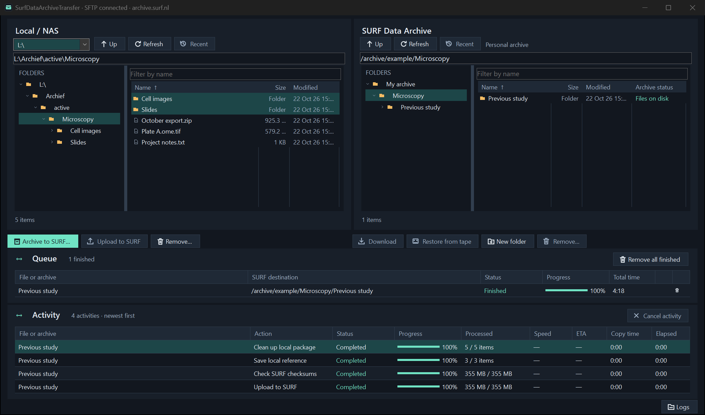
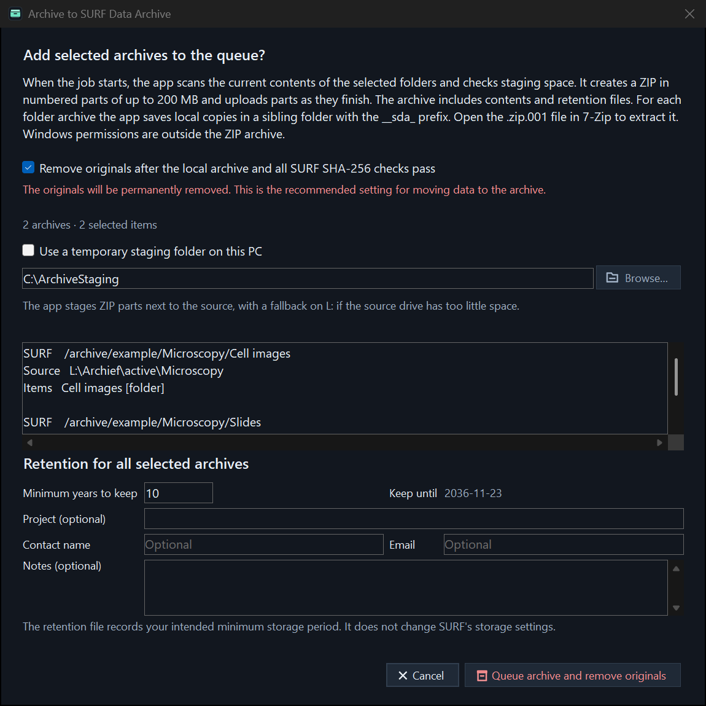
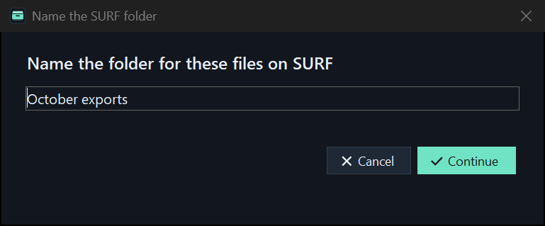
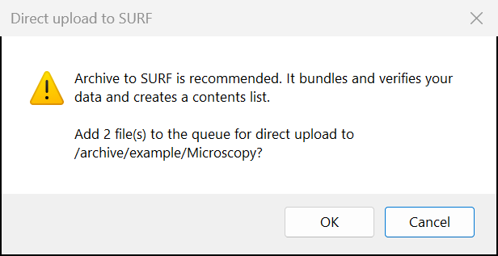
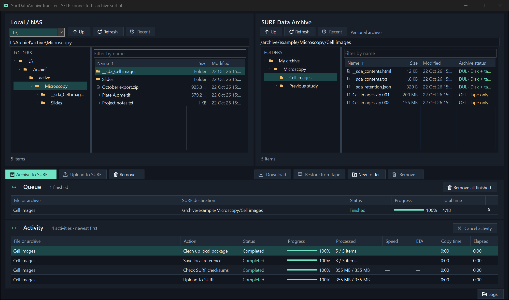
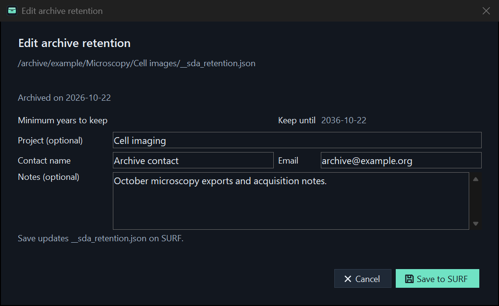

Step-by-step guide
Choose how to send your data to SURF Data Archive, then follow the steps through verification and retrieval. Screenshots use example files and an example SURF account.
Before you start
- Open the app and sign in. Use your SURF Data Archive account. Remember username saves the username on this PC. Enter your password each time.
- Find your data on the left. In Local / NAS, choose a drive or NAS location. Use the folder tree or the address field to find the folder that contains your data. Hold Ctrl to select separate rows or Shift to select a range in the file list.
- Open the destination on the right. Browse to a writable folder in SURF Data Archive. Use New folder if you need a new destination parent. The path above the right pane shows where your selection will go.

View full sizeArchive one or more folders
- Select folders only. Select one or more folder rows and click Archive to SURF…. The app adds one queue item per folder. Each SURF destination uses that folder’s original name, including when the folder contains subfolders.
- Review the confirmation. In Add selected archives to the queue?, check the listed source, selected items, and SURF paths. For example,
Cell imagesbecomes a subfolder namedCell imagesunder the openMicroscopydestination. If that name already exists on SURF, choose a different SURF parent. - Decide whether to remove the originals. The removal checkbox is on by default. The app permanently removes the original folder and its archived contents after local verification and the SURF SHA-256 checks pass. For a copy or a trial run, clear the checkbox and use Queue archive and keep originals. The app saves a local reference folder in either mode.
- Choose temporary storage, if needed. By default, the app stages the ZIP parts beside the source. Select Use a temporary staging folder on this PC and click Browse… to stage on a local disk. The app remembers that choice. When a job starts, it scans the selection, estimates the space needed, and falls back to staging on L: if the selected location has too little free space.
- Set retention and queue the archive. Review Minimum years to keep, which defaults to 10, and the calculated Keep until date. Add the project, contact name, email, and notes as needed. The form applies these values to all archives in the selection. Click the queue button and follow the job in Queue and Activity.

View full sizeArchive loose files together
- Select files only. Choose one or more files from the same Local / NAS folder. Open the desired SURF parent and click Archive to SURF….
- Name the new SURF folder. Enter a new name in Name the folder for these files on SURF and click Continue. For example,
October exportscreates anOctober exportssubfolder under the open SURF destination. The selected files go into one archive in that subfolder. - Review the same archive options. Check the destination and selected filenames in the confirmation. Set staging, retention and whether to remove the originals, then queue the archive. If removal is enabled, the app removes the selected files after verification. The containing Local / NAS folder and its other contents stay in place.
- Find the result on SURF. Open the new subfolder to find the numbered ZIP parts and the three
__sda_files. The contents files record the original location and the full path of each selected file. Loose-file archives keep their metadata on SURF.

View full sizeUpload files as they are
Use direct upload for files that are already packaged, such as an existing ZIP export. Every selected file must be larger than 100 MB.
- Select the files on the left. Open the exact folder where the files should appear on SURF. To put them in a new subfolder, create and open that folder first.
- Click Upload to SURF. Read the confirmation, check the destination, and choose OK. The app adds each file to the queue separately.
- Check the result. Look for Finished in Queue and confirm the original filenames in the SURF pane. Direct upload checks the remote file size. It leaves the source files in place and skips compression, package SHA-256 verification and
__sda_metadata.

View full sizeFollow the queue and the individual steps
Queue shows each job’s destination, overall progress and total time. Add more jobs while the current job runs. Use the icons to pause, resume or remove waiting jobs. Waiting jobs continue after sign-in when you restart the app. Paused jobs stay paused.
Activity shows the progress of each step. During the initial scan, the item count and amount of source data found grow as the app explores the selection. The app can start uploading parts while it compresses the remaining data.
- Scan source and compress source. The app lists the source, checks staging space and compresses it into numbered ZIP parts of up to 200 MB.
- Check local archive and write archive metadata. The app reads the archive back, checks the ZIP part hashes and checks that the extracted file bytes match the source. It writes the contents and retention files.
- Upload to SURF and check SURF checksums. The app finishes sending the package and checks every uploaded part and metadata file against its SHA-256.
- Save the local reference, remove originals and clean up. Where applicable, the app writes the prefixed reference folder and removes the originals as configured. It then removes temporary local package files. Check Queue for Finished.
If a job fails or is interrupted, check Activity and Logs. When a recovery package remains available locally, use the queue item’s Resume archive upload icon. The app reuses existing verified files, finishes the upload and checks the remote hashes. Resuming keeps any remaining originals in place.
Understand the __sda_ files
Archive to SURF saves three companion files beside the ZIP parts. The shared prefix makes the files easy to find when the folder is sorted by name.

View full size View full size
View full size
The Local / NAS reference folder
For a folder archive, the app saves a sibling such as __sda_Cell images next to the original location. It contains the three companion files. To get the archived data back, retrieve the ZIP parts from the SURF destination listed in the contents. The local copies reflect the metadata from the time of archiving. Open the remote HTML to see the latest retention values.
Update retention on SURF
In the SURF pane, double-click __sda_retention.json. If it is on tape, the app requests a restore and waits for it to become available. Change the fields in Edit archive retention and click Save to SURF. Reopen __sda_contents.html from SURF to see the saved values. The app also retrieves the HTML or TXT from tape when you double-click it.

View full sizeRestore, download and extract
- Open the archive folder on SURF. The Archive status column shows whether a part is on disk, on tape, or being restored. Use the contents file to check which parts belong to the archive.
- Restore files that are on tape. Select the archive parts or the archive folder and click Restore from tape. Leave the app open to monitor the request in Activity until it shows Ready to download.
- Download to a folder with enough space. Open your download location on the left. Select all the archive parts on the right and click Download. A SURF folder can be downloaded as a folder when it has no subfolders. When it contains subfolders, open it and select the files you need.
- Extract with 7-Zip. Keep all parts, such as
Cell images.zip.001,Cell images.zip.002and the rest, together under their original names. Right-click the.zip.001file and choose 7-Zip → Extract files…. On Windows 11, use Show more options to find the 7-Zip menu if needed. You can also select.zip.001in 7-Zip File Manager and click Extract. Choose an output folder. 7-Zip reads the remaining parts automatically. - Check the extracted data. Compare it with the folder tree in
__sda_contents.html. The archive stores file contents and paths. Windows access permissions are managed separately on the restore location.